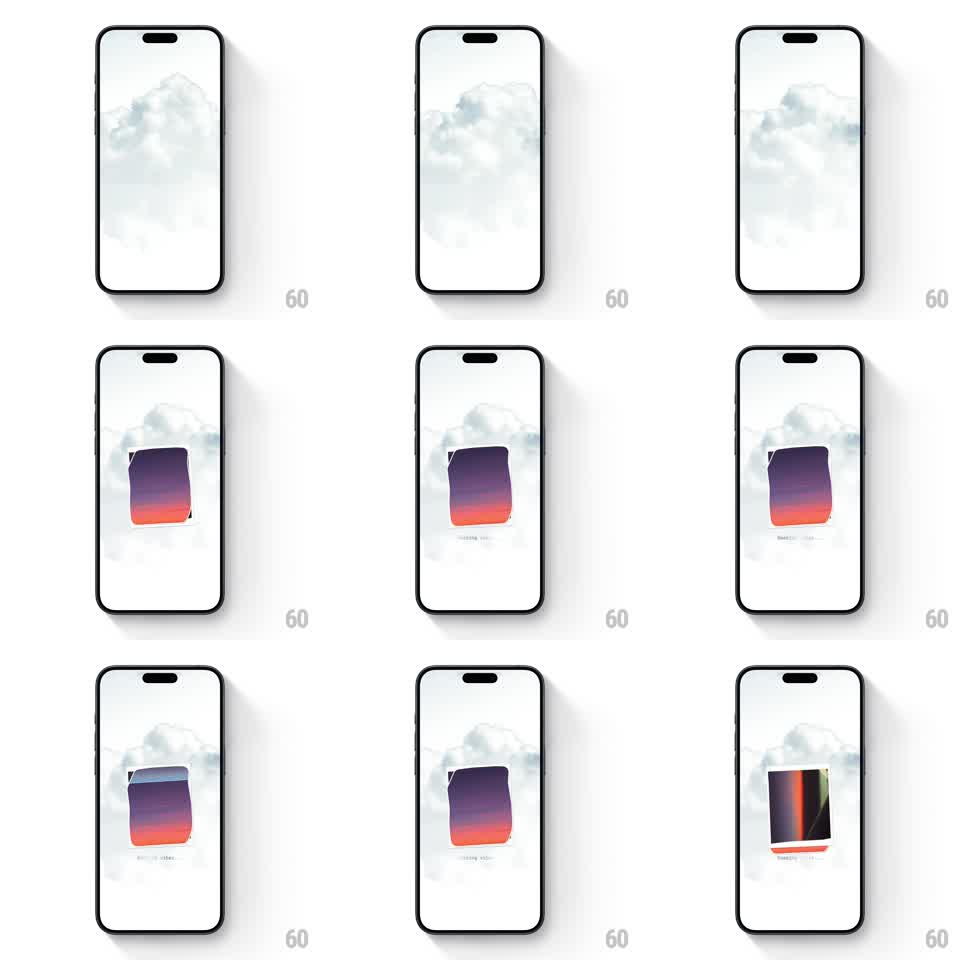

Media
Frame-by-frame

Rebuild this interaction 1:1: Picky's vibe scan - a stack of photo cards shuffles continuously at center screen while a scan label ticks, the top card wobbling and flipping until the sort resolves.

Rebuild this interaction 1:1: Picky's vibe scan - a stack of photo cards shuffles continuously at center screen while a scan label ticks, the top card wobbling and flipping until the sort resolves.
## Integration
Integration: stack-agnostic spec - springs given as stiffness/damping, timed motions as duration + curve; map every value to your framework and animation library of choice.
## Scene
Soft white screen with a faint cloudy watermark behind. Center: a small stack of rounded cards with purple-to-orange gradient backs and a status label below ("scanning...", then a result line). The top card occasionally flips to reveal a dark photo face with light streaks.
## Motion spec
Pattern: continuous stack shuffle during a scan state.
- The stack idles with a card-shuffle cycle: the top card lifts (translate -12px), rotates (+/- 8deg), and re-inserts toward the back every ~700ms, with the next card stepping forward.
- Cards in the stack sit at slight offsets (2-4px, +/- 3deg) so the deck reads as physical.
- Mid-scan, the top card does a flip (rotateY 180deg, 400ms, ease-in-out) showing its photo face, then flips back.
- The status label cycles an ellipsis animation (dots appear/disappear, 400ms steps) and swaps to the result text with a fade (200ms) when the scan resolves.
## Calibration
- The shuffle should feel like someone nervously thumbing a deck - irregular, not metronomic.
- Keep the deck small: 3-4 visible cards maximum.
## Reduced motion
Stack holds still; a simple spinner replaces the shuffle; label crossfades to the result.
## Don't miss
- The cloudy watermark backdrop stays static - only the deck moves.
- The flip reveal happens once per scan, roughly two-thirds in.